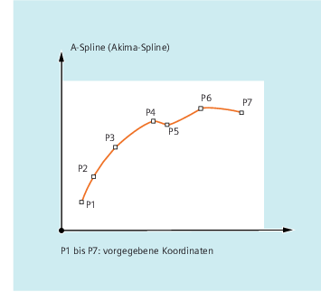
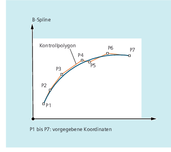
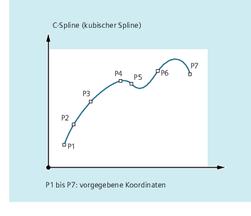
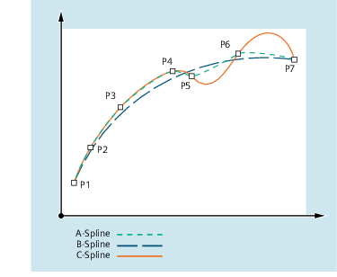

Spline-Interpolation (ASPLINE, BSPLINE, CSPLINE, BAUTO, BNAT, BTAN, EAUTO, ENAT, ETAN, PW, SD, PL): Weitere Informationen
Weitere Informationen
Vorteile der Spline-Interpolation
Durch Verwendung der Spline-Interpolation lassen sich, im Gegensatz zur Verwendung von Geradensätzen G01, folgende Vorteile erzielen:
-
Reduzierung der Anzahl von benötigten Teileprogrammsätzen zur Beschreibung der Kontur
-
Weicher, mechanikschonender Kurvenverlauf beim Übergange zwischen den Teileprogrammsätzen
Eigenschaften und Anwendung der verschiedenen Spline-Typen
Spline-Typ | Eigenschaften und Anwendung |
|---|
A-Spline |  Eigenschaften: Verläuft exakt durch die vorgegebenen Stützpunkte. Der Kurvenverlauf ist tangenten- aber nicht krümmungsstetig. Erzeugt kaum ungewollte Schwingungen. Der Einflussbereich von Stützpunktänderungen ist lokal, d. h. Veränderung eines Stützpunkts wirkt sich nur auf bis zu max. 6 benachbarte Stützpunkte aus.
Anwendung: Der A-Spline eignet sich vor allem für die Interpolation von Kurvenverläufen mit großen Steigungsänderungen (z. B. treppenförmige Kurvenverläufe). |
B-Spline |  Eigenschaften: Verläuft nicht durch die vorgegebenen Stützpunkte, sondern nur in deren Nähe. Die Kurve wird durch die Stützpunkte angezogen. Durch Gewichtung der Stützpunkte mit einem Faktor, kann der Kurvenverlauf zusätzlich beeinflusst werden. Der Kurvenverlauf ist tangenten- und krümmungsstetig. Erzeugt keine ungewollten Schwingungen. Der Einflussbereich von Stützpunktänderungen ist lokal, d. h. Veränderung eines Stützpunkts wirkt sich nur auf bis zu max. 6 benachbarte Stützpunkte aus.
Anwendung: Der B-Spline ist primär als Schnittstelle zu CAD-Systemen gedacht. |
C-Spline |  Eigenschaften: Verläuft exakt durch die vorgegebenen Stützpunkte. Der Kurvenverlauf ist tangenten- und krümmungsstetig. Erzeugt häufig ungewollten Schwingungen, besonders an Stellen mit großen Steigungsänderungen. Der Einflussbereich von Stützpunktänderungen ist global, d. h. Veränderung eines Stützpunkts wirkt sich auf den gesamten Kurvenverlauf aus.
Anwendung: Der C-Spline kann dann gut eingesetzt werden, wenn die Stützpunkte auf einer analytisch bekannten Kurve liegen (Kreis, Parabel, Hyperbel) |
Gegenüberstellung der drei Spline-Typen bei gleichen Stützpunkten

Mindestanzahl an Spline-Sätzen
Die G-Befehle ASPLINE, BSPLINE und CSPLINE verbinden Satzendpunkte mit Splines. Dazu müssen im Vorlauf eine Reihe von Sätzen (Endpunkte) gleichzeitig berechnet werden. Die Größe des Puffers für die Berechnung beträgt standardmäßig 10 Sätze. Nicht jede Satzinformation ist ein Spline-Endpunkt. Die Steuerung benötigt jedoch von 10 Sätzen eine bestimmte Anzahl an Spline-Endpunkt-Sätzen:
Spline-Typ | Mindestanzahl an Spline-Sätzen |
|---|
A-Spline: | Von je 10 Sätzen müssen mindestens 4 Spline-Sätze sein.
Kommentarsätze und Parameterrechnungen zählen hierbei nicht. |
B-Spline: | Von je 10 Sätzen müssen mindestens 6 Spline-Sätze sein.
Kommentarsätze und Parameterrechnungen zählen hierbei nicht. |
C-Spline: | Die benötigte Mindestanzahl an Spline-Sätzen ergibt sich aus folgender Summe: Wert aus MD20160 $MC_CUBIC_SPLINE_BLOCKS + 1 Im MD20160 wird die Anzahl der Punkte eingetragen, über die der Spline-Abschnitt berechnet wird. Die Standardeinstellung beträgt 8. Von je 10 Sätzen müssen daher im Standardfall mindestens 9 Spline-Sätze sein. |
| Hinweis |
Bei Unterschreitung des tolerierbaren Werts wird ein Alarm ausgegeben, ebenso, wenn eine am Spline beteiligte Achse als Positionierachse programmiert wird. |
Zusammenfassung kurzer Spline-Sätze
Bei der Spline-Interpolation können kurze Spline-Sätze entstehen, die zu einer unnötigen Reduzierung der Bahngeschwindigkeit führen. Mit der Funktion "Zusammenfassung kurzer Spline-Sätze" können diese Sätze so zusammengefasst werden, dass die resultierende Satzlänge ausreichend groß ist und nicht zu einer Verringerung der Bahngeschwindigkeit führt.
Die Funktion wird aktiviert über das kanalspezifische Maschinendatum:
MD20488 $MC_SPLINE_MODE (Einstellung für Spline-Interpolation)
Weitere Informationen: Funktionshandbuch Basisfunktionen